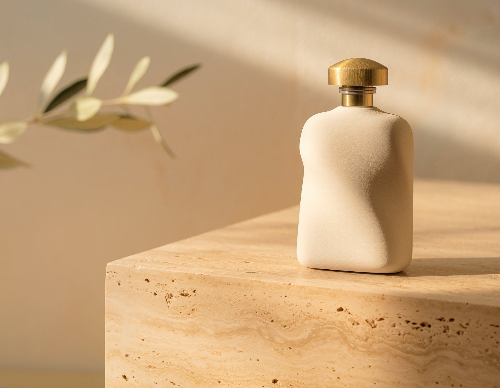

A fictional everyday fragrance presented with a restrained, editorial point of view.
Independent creative practice / case study
VELORA
A calm, image-led launch direction for a fictional premium fragrance label.
Fictional brand and product · Independent portfolio concept · AI-generated source still

VELORAA softer kind
FICTIONAL BRAND / INDEPENDENT PROJECT
A softer kind
of ritual.
SCENT, SHAPED BY STILLNESS
DISCOVER VELORA ↗
01 / THE BRIEF
Make the product feel considered.
The brief was to build a distinctive visual direction for a fictional premium fragrance label, then create a campaign master that could guide supporting brand and product layouts.
People drawn to premium scent, tactile materials, and calm product storytelling. This is a creative hypothesis, not audience research.
Keep the bottle as the focal point while leaving enough clean space for a short message and clear next step.
A campaign master, source image, typographic identity board, and wordmark study.
02 / ART DIRECTION
Warm materials. Quiet hierarchy.
The direction pairs tactile product photography with restrained typography. Each choice protects the product focus and keeps the campaign copy legible.
Leave room for the story.
Ivory glass, brushed brass, travertine, warm daylight, and a small olive detail create a tactile, premium setting. The prompt asked for no text or logo in the generated image so the layout could stay editable.
Pair serif with clear sans.
A restrained serif gives the headline an editorial tone. Small sans labels keep the wordmark, product line, and CTA direct and readable.
One message, one next step.
A subtle dark fade supports white type over the photograph. The two-line headline, short supporting line, and single CTA establish a clear reading order without crowding the product.
03 / PROCESS
From brief to campaign master.
The product still and final typography were handled as separate parts, making the message and layout easier to refine.
Set the brief
Choose a fictional fragrance product, intended mood, and the single action the launch creative should invite.
Direct the still
Use Adobe Firefly to generate a product image with the bottle, materials, lighting, and negative space specified in the prompt.
Compose the message
Add the wordmark, headline, supporting line, and CTA as separate campaign typography over the still.
Review the system
Check the contrast and hierarchy against the identity board and keep placeholder-based channel layouts clearly identified.
04 / FINAL WORK
The source image, the system, the lockup.
The hero above shows the final campaign master. These supporting files show the generated source still and the identity studies that guide it.